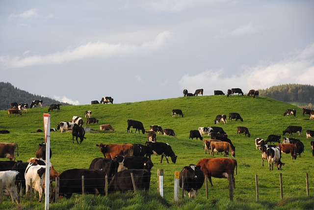
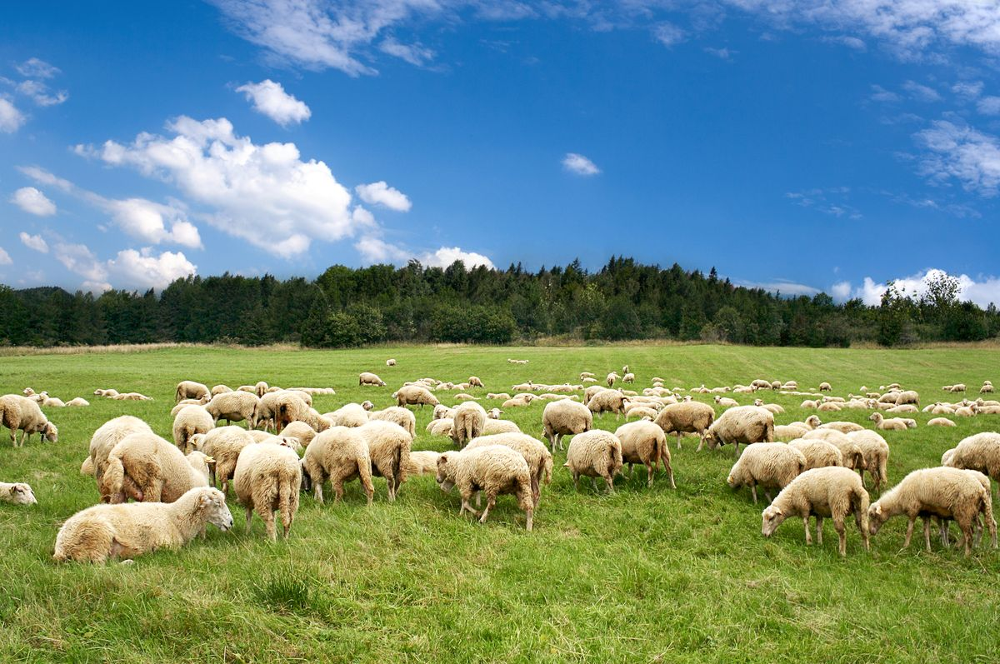

 축산 기능사 자격 조건 ① 별도의 학력이나 경력 제한이 없는 무제한 응시 자격을 제공 ② 응시 연령 : 만 14세 이상 ③ 학력 제한 : 없음 ④ 경력 제한 : 없음 ⑤ 외국인 응시 가능 여부 : 가능  축산 산업기사 자격 조건 ① 관련 학과 전문대학 졸업 및 예정자 ② 유사 직무 분야에서 2년 이상 경력자 ③ 관련 분야의 산업기사 등급 이상 자격 취득자 ④ 기능사 등급 자격 취득 후 관련 분야에서 1년 이상 경력자 ⑤ 학점은행제 41학점 이상 이수자 축산 기사 자격 조건 ① 관련 학과 전문대학 졸업 및 예정자 ② 관련 학과 전문대학 졸업 후 관련 분야에서 2년 이상 경력자 ③ 유사 직무 분야에서 4년 이상 경력자 ④ 관련 분야의 기사 등급 이상 자격 취득자 ⑤ 학점은행제 106학점 이상 이수자